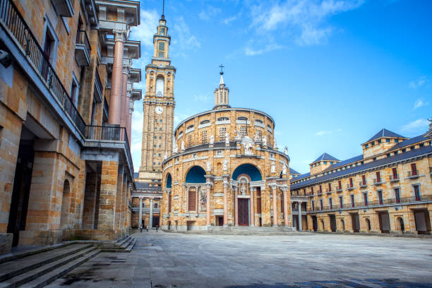

La Universidad Laboral de Gijón es un edificio situado en la parroquia de Cabueñes del concejo de Gijón (Principado de Asturias, España). Desde su construcción entre 1948 y 1957, y hasta la década de 1980, fue sede de una institución franquista orientada a educar a los hijos de los trabajadores. En 2007 se reinventó bajo la marca Laboral Ciudad de la Cultura, que engloba equipamientos como la Radiotelevisión del Principado de Asturias, LABoral Centro de Arte y Creación Industrial y la Facultad de Comercio, Turismo y Ciencias Sociales de la Universidad de Oviedo. A su vez está integrada en la Milla del Conocimiento Margarita Salas.
Se trata de la obra arquitectónica más importante de cuantas se realizaron en Asturias durante el siglo xx. Además, con sus 270 000 m², es el edificio más grande de España. Está declarado Bien de interés cultural con la categoría de Monumento desde 2016.
Índice
| Universidad Laboral de Gijón | ||
|---|---|---|
| La Laboral | ||
| Bien de Interés Cultural | ||
|  | ||
| Localización | ||
| País | España | |
| Ubicación | Principado de Asturias | |
| Dirección | C. Luis Moya Blanco, 261, 33203 | |
| Coordenadas | 43°31'27″N 5°36'51″O | |
| Información general | ||
| Estado | Completado | |
| Usos | Multiusos | |
| Estilo | Estilo neoherreariano, Neoclasicismo | |
| Declaración | 2016 | |
| Inicio | 1948 | |
| Finalización | 1957 | |
| Construcción | 1946 | |
| Remodelación | 2007 | |
| Coste remodelación | 80 millones de € | |
| Propietario | Gobiero del Principado de Asturias, Universidad de Oviedo | |
| Altura | ||
| Altura | 130 m | |
| Altura arquitectónica | 117,6 m | |
| Detalles técnicos | ||
| Plantas | 17 | |
| Superficie | 270 000 m2 | |
| Superficie paralela | 1 544 575 m2 | |
| Diseño y construcción | ||
| Arquitecto | Luis Moya Blanco | |
| Promotor | Fundación José Antonio Girón | |
| Ingeniero | Ramiro Moya Blanco | |
| Otros | José Espinós Alonso, Manuel Álvarez Laviada y Florentino Trapero (Escultores), Javier Winthuysen Losada (Jardinería) | |
| Conocido por | Edificio más grande de España y más alto de Asturias. | |
| Otra información | ||
| N.º de asientos | 1.756 (Teatro) | |
| Instalaciones | Iglesia, piscina, canchas deportivas, talleres, convento, jardines, cafetería y mirador. | |
| www.laboralciudaddelacultura.com | ||
A mediados de los años 1940, como consecuencia de un grave accidente laboral en una mina de la cuenca del Caudal, el subsecretario del Ministerio de Trabajo, Carlos Pinilla Turiño, que acudió al funeral de las víctimas de dicho accidente, se reunió en Gijón con un grupo de personalidades locales como Alejandro Pidal Guilhou; Álvaro Armada Ulloa, octavo conde de Revillagigedo, y Ricardo Heredia Guilhou, tercer conde de Benahavís, lideradas por el industrial minero José María Fernández «el Pontico», para impulsar la creación de un orfanato minero con la intención de ayudar a los afectados. Esta institución se constituyó de manera formal en escritura pública otorgada ante notario el 6 de octubre de 1945 con el nombre de Fundación «José Antonio Girón», en homenaje al entonces ministro de Trabajo.
El objetivo fundacional concreto fue el de formar a niños huérfanos de padres víctimas de accidentes laborales en la minería, para lo que se proyectó un edificio que pudiera atender a mil alumnos y que contara con las distintas dependencias requeridas para el desarrollo de la vida estudiantil, como residencia, escuela, talleres industriales, granja, instalaciones deportivas o campos de cultivo. El Ministerio de Trabajo encomendó a la Junta del Patronato de la Fundación la responsabilidad de llevar adelante la obra por Orden de 14 de junio de 1946. Para ello se adquirieron en la carretera de Gijón a Villaviciosa unos terrenos con una superficie de 1 544 572 m², de los que 381 551 m² lo fueron mediante el trámite de expropiación forzosa. Otra superficie complementaria, de 1 464 300 m², se adquirió para la Granja Lloreda, en El Infanzón.
Se encargó la construcción del complejo a un equipo de arquitectos dirigido por el madrileño Luis Moya Blanco y formado por él mismo, su hermano Ramiro Moya Blanco, Pedro Rodríguez A. de la Puente y el gijonés José Marcelino Díez Canteli. Los mejores técnicos de la época se ocuparon de las diferentes especialidades que la obra demandó. Así, los jardines fueron diseñados por Javier Winthuysen Losada, Inspector Nacional de Parques y Jardines Artísticos; el proyecto de granja agronómica se encargó a los ingenieros agrónomos Gabino Figar Álvarez e Ignacio Chacón Enríquez; las esculturas fueron realizadas por Manuel Álvarez Laviada y Florentino Trapero; y los mosaicos por Santiago Padrós, sobre trabajos del pintor sevillano Joaquín Valverde.
Las obras comenzaron en abril de 1948. Durante el transcurso de las obras, en 1950, el Ministerio de Trabajo decidió la creación de las Universidades Laborales, destinadas a la formación profesional de los jóvenes, por lo que el Orfelinato Minero acabó transformándose en la Universidad Laboral de Gijón. La enseñanza y dirección del centro se encomendó a la Compañía de Jesús, mientras que de la intendencia se encargó la Orden de las hermanas pobres de Santa Clara (Clarisas). La Fundación «José Antonio Girón» se disuelve en 1954 en favor de la Caja de Seguros de las Mutualidades Laborales.
Al comienzo de su primer año de actividad, en octubre de 1955, la Universidad Laboral acogió en total a 408 niños. 111 eran asturianos y el resto llegaron de Cataluña (64), C. Valenciana (4), Aragón (12), Vizcaya (37), Andalucía (37), Castilla la Nueva (61), Castilla la Vieja (27), Extremadura (8), Galicia (18) y León (22). Sin embargo, las obras se prolongarían hasta 1958, cuando se completa el teatro.
En 1978 se entregó la dirección a personal docente de las Universidades Laborales, que sustituyó a los jesuitas y el 24 de diciembre de 1996 se rescindió también el convenio con las monjas, que se trasladaron a un nuevo monasterio en Cigales.
En su momento fue el Instituto de Educación Secundaria más grande de España, con cabida para más de 3000 alumnos.
Durante los años 1980, el edificio fue prácticamente abandonado, quedando deteriorado con el transcurso de los años. El salón de actos es cerrado en 1999.
Más de 110 000 alumnos, 40 000 de ellos asturianos, recibieron educación en el edificio.
En 2001 el gobierno asturiano se hace cargo del deteriorado inmueble y comienza la elaboración del Plan de Usos. En el año 2005 inician la obra de la rehabilitación del complejo, que se prolongará hasta 2007 bajo el proyecto Laboral, ciudad de la cultura. Las obras concluyeron en marzo de 2007. Estas actuaciones rehabilitaron el edificio, los jardines, la iglesia, reformaron el teatro, crearon el LABoral y propusieron un hotel de cinco estrellas nunca realizado. Se invirtieron 80 millones de euros y más de 1 000 personas trabajaron conjuntamente.
El edificio está construido de espaldas a la ciudad de Gijón. Luis Moya lo diseñó de este modo a imagen y semejanza del Partenón de Atenas y con la misma intención: que para acceder a su interior hubiera que rodearlo para apreciarlo en toda su magnificencia. Sigue las directrices del estilo neoherreriano y neoclásico, propios de la arquitectura del franquismo.
La planta está conformada en base de un enorme rectángulo, centrado en el gran patio central y con una sucesión de patios interiores de menor tamaño. Destacan las construcciones no rectangulares de la iglesia y el convento, en el extremo oeste del edificio. Una característica del edificio es su asimetría, especialmente visible en la posición de su acceso principal y en la torre así como en el diseño de la planta.
Está situada en la fachada principal, con un arco de entrada rematado en forma de torre. Sobre este arco, de medio punto, se sitúa una cruz de la Victoria con el águila de San Juan y el yugo y las flechas de los Reyes Católicos, adornado con dos ángeles de tenantes.
Situado tras la torre-puerta, es un patio rectangular a la manera de atrium corintio, con diez columnas de granito de diez metros y medio de altura cada una. Su objetivo, en palabras de Moya era «proporcionar la debida impresión de dignidad en el acceso a la gran plaza y preparar su escalada». Tras pasar el atrio, un acceso al patio se convierte en punto de fuga que muestra la torre y la iglesia. En la reforma de 2007 se añade un techo acristalado.
Es un patio descubierto de ciento cincuenta metros de largo por cincuenta de ancho que hace la función de plaza mayor del recinto, estructurándose todo el complejo en torno a él. Tiene unas dimensiones similares a las de la Plaza de San Marcos en Venecia. Se encuentra presidido por la iglesia y su torre al frente, soportales a la izquierda y el teatro neoclásico a la derecha.
La iglesia es sin duda el edificio más espectacular del conjunto arquitectónico de la Universidad Laboral. Con una superficie de 38,40 m por 24 metros, es una de las iglesias de planta elíptica más grandes del mundo. Se aprecia cierta similitud, especialmente interior, con la iglesia de San Agustín de Madrid, del mismo autor.
En el exterior, sobre el dintel de la puerta, está colocada una imagen de la Virgen de Covadonga en una hornacina central y, flanqueándola, cuatro columnas corintias sostienen las imágenes de San José, San Ignacio, San Pedro y San Pablo. La imagen de San José destaca por carecer de cabeza como consecuencia del accidente que se produjo cuando se desprendió la gran esfera metálica situada sobre la puerta de la iglesia. Por encima, el Apóstol Santiago a caballo y dos ángeles adorando una reproducción de la Cruz de la Victoria, símbolo de Asturias, obra del escultor José Espinós Alonso realizada en bronce con incrustaciones de cristales, mármoles y piedras de color. También a ambos lados de la hornacina central, otras dieciséis estatuas representan a San Juan de la Cruz, San Juan Bosco, San Vicente Ferrer, San Melchor de Quirós, Santa Clara, San Juan de la Cruz, San Pedro de Alcántara, San Lorenzo, San Isidoro, Santa Teresa de Jesús, Santo Domingo de Guzmán, San Francisco, San José de Calasanz, Santa Eulalia, Fernando III el Santo, San Isidro y Santo Toribio.
El interior se halla cubierto por una cúpula con un peso estimado de dos mil trescientas toneladas y montada sobre 40 nervaduras de ladrillos cruzadas entre sí que sostienen la estructura. La altura desde el suelo hasta el inicio de los arcos de la cúpula es de 25 metros y de 33 hasta el centro del óculo. Por este debería entrar la luz del sol e iluminar el centro de la iglesia, aunque en la actualidad no es así debido a que la cúpula cedió ligeramente.
El peso de la cúpula sin la necesidad de las columnas hizo pensar que se vendría abajo al quitar los andamios y para tranquilizar a los trabajadores y demás personas, Luis Moya organizó una comida con su familia justamente en el día que lo desmontaban en el centro de la iglesia.
El suelo del templo es de mármol en su totalidad, y los bancos, pensados para dar cabida al millar de alumnos de la institución y a sus profesores, son de embero, un tipo de madera de Guinea Ecuatorial. Fueron tallados expresamente para el edificio y cada uno de ellos, diferente de los demás, fue realizado en una sola pieza y destinado a ocupar una posición determinada. Las columnas del baldaquino, de granito rosa de Porriño, también son de una sola pieza, con una altura cada una de 7,75 m.
Con la rehabilitación del complejo, la iglesia fue desacralizada, se retiró la simbología religiosa, a excepción de una sencilla cruz, y los bancos. Está destinada a espacio expositivo.
El teatro presenta una fachada de estilo helenístico y de dimensiones similares a las del Partenón. Coronando el frontón central se eleva un gran escudo de España, según el modelo de 1945. Tiene su entrada custodiada por las estatuas de seis grandes escritores: Miguel de Cervantes, Leandro Fernández de Moratín, Pedro Calderón de la Barca, Tirso de Molina, Francisco de Quevedo y Lope de Vega.
Su aforo es de 1.756 localidades, repartidas entre las 950 butacas del patio, los palcos y el anfiteatro. Fue el primer teatro totalmente climatizado de Europa, para lo cual contó con un revolucionario sistema subterráneo de distribución de aire. Antes de su restauración, contaba con un novedoso sistema de butacas reclinables, forradas de piel de cabra, aunque hasta hace poco se pensaba que era de piel de camello. Las butacas no pudieron conservarse durante la restauración y fueron sustituidas por un modelo más moderno.
El frontis del escenario fue decorado con un fresco de ciento veinte metros cuadrados titulado Alegoría de las artes y oficios y realizado por el pintor andaluz Enrique Segura, autor también de los frescos de la Sala de Pinturas. En él se trataba de explicar plásticamente que es posible la nivelación de las clases sociales por medio de la cultura. El fresco mostraba asimismo a varios personajes del régimen franquista como Girón, Pinilla o Yagüe y a los arquitectos y escultores que participaron en la obra. En la restauración de 2007 fue tapado por una gran concha de madera. Esta actuación se justificó por su mal estado, el cual se calificó de irrecuperable como consecuencia de los problemas de humedades y desprendimientos que tenía en aquel momento.
La sala está dotada de una acústica extraordinaria. El estudio de las formas y materiales empleados logra una óptima propagación del sonido, de tal modo que un actor en el centro del escenario puede ser escuchado claramente desde cualquier punto del recinto. Si bien las características de la sala son ideales para voz, conferencias y música acústica, no son tan idóneas para música clásica. No obstante, durante las obras de reforma del edificio se hizo un esfuerzo por mantener la peculiar sonoridad del teatro.
También cabe señalar que posee un foso móvil. Este puede ser utilizado para ubicar a una orquesta, aumentar el aforo en 90 localidades o expandir el escenario, de acuerdo con lo que requiera el evento celebrado.
Con una altura de 130 m, es el edificio más alto del Principado de Asturias, siendo más alta que la torre de la Catedral de Oviedo y el edificio de piedra más alto de España. Un ascensor interno permite acceder al mirador, en la planta 17, desde donde se divisa la ciudad. Tiene como referentes estéticos diversos edificios históricos, como el Faro de Alejandría, la Torre de Hércules o la Giralda. Los azulejos que recubren los interiores de la torre son de cerámica de Talavera de la Reina. Puesto que fueron pintados a mano, cada uno de ellos es una pieza única.
En el edificio central se encuentran en la actualidad diversas instituciones, como la Facultad de Comercio, Turismo y Ciencias Sociales Jovellanos de la Universidad de Oviedo, la Escuela Superior de Arte Dramático de Asturias, el Conservatorio Profesional de Música y Danza, el Centro Integrado de Formación Profesional, la Sociedad de Servicios del Principado de Asturias y, en los antiguos talleres, LABoral Centro de Arte y Creación Industrial.
En el resto de terrenos pertenecientes a la Fundación «José Antonio Girón», destinados a la Universidad Laboral de Gijón, se han construido todo tipo de instalaciones. Por ejemplo, en la Granja Lloreda se ha construido un campo de golf municipal y parte de la Granja Agronómica de Somió alberga las dependencias del Instituto de Educación Secundaria Universidad Laboral, mientras que el que fuera convento de las monjas clarisas es actualmente la sede de la Radiotelevisión del Principado de Asturias. Parte de los terrenos para actividades deportivas son ocupados ahora por el Hospital de Cabueñes, el Tanatorio, el Parque Científico Tecnológico de Gijón y el campus de Gijón de la Universidad de Oviedo.
La sede de RTA, en el antiguo convento. En el ala norte se ubica la sede de la multinacional alemana ThyssenKrupp Elevator, con su centro mundial I+D+i de la unidad de negocio de escaleras mecánicas, pasillos rodantes y pasarelas de embarque, con una nave de aproximadamente dos mil metros cuadrados, en la cual se prueban los prototipos de los futuros modelos de la empresa.
Destaca también el proyecto para la creación de más de un centenar de miniapartamentos para estudiantes y profesores de la Universidad de Oviedo, a modo de
La cadena hotelera AC Hotels proyectó la apertura de un hotel de cinco estrellas ocupando la antigua residencia femenina, proyecto suspendido por la crisis económica.